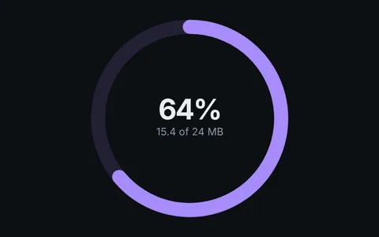
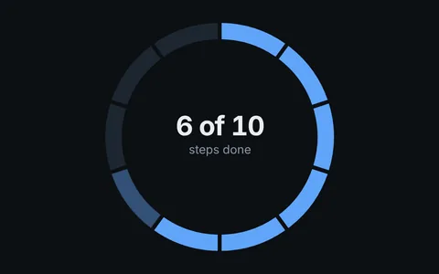
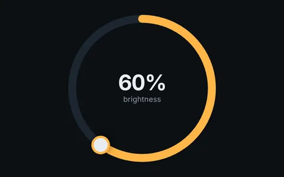
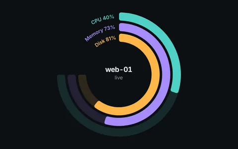

Progress rings
A circular progress bar in Orbit is one element, <o-progress value="60">, inside a ring. Its color, track, ends and thickness are CSS. These four cover the usual patterns.

Progress with backgroundA fill over its track, number in the middle.
Dashed progressTen segments for progress counted in steps.
Progress with handleA circular slider you can drag.
Stacked progressThree live metrics, labeled in the open quarter.
Related
- Progress
- Orbit Kit rings
- Gauges: when you want a needle
- Fitness and health apps